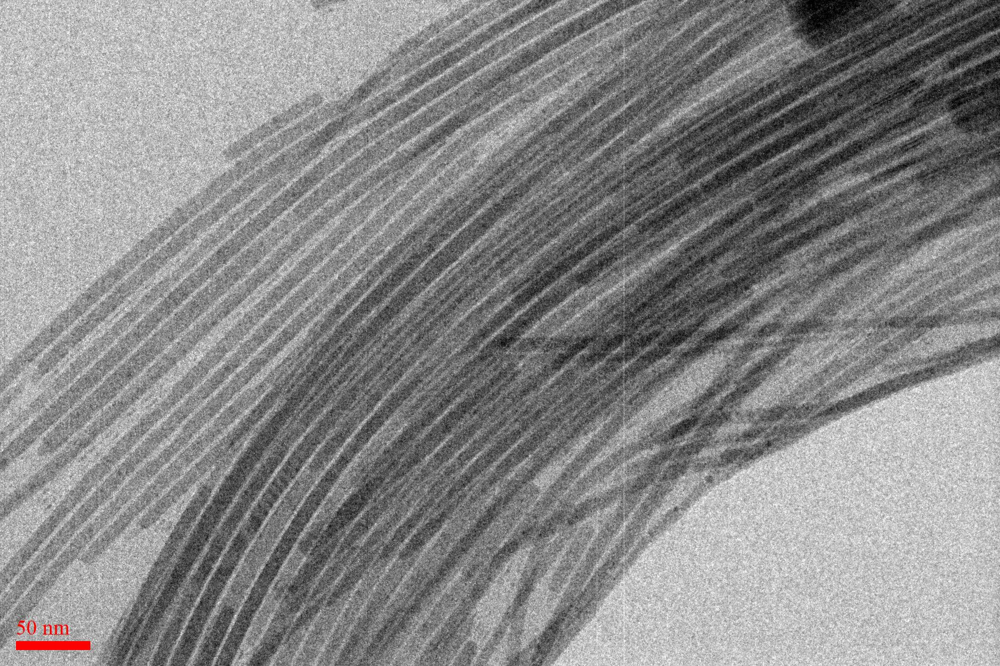

Synthesis of Organic-Inorganic Hybrid Nanocrystals
We design and synthesize multi-dimensional hybrid perovskite nanocrystals — quantum dots, nanowires, and nanoplates — and precisely control the nanostructure and nanomorphology of organic/polymer semiconductors. Artificial intelligence and computational chemistry accelerate the discovery of new semiconductor materials.
🧪
Nanocomposite Materials Design & Synthesis
- Synthesis of multi-dimensional organic-inorganic hybrid perovskite nanocrystals
- Control of organic/polymer semiconductor nanostructures and nanomorphology
- Development of novel semiconductor nanomaterials using AI and computational chemistry
💡
Optoelectronic Semiconductor Device Characterization
- High-efficiency solar cell applications and analysis of hybrid nanomaterials
- Control of luminescent properties of nanomaterials for future displays
- Highly sensitive IoT devices for chemical/gas/temperature/humidity smart sensors
- Photodetector devices for high-resolution image sensor applications
- Infrared photodetector materials and devices for autonomous-driving sensors
☀️
Next-Generation Solar Cells & Optoelectronics
- Solution processes for large-area solar cell applications
- Semi-transparent solar cells for building-integrated photovoltaics (BIPV)
- Novel device architectures for future flexible optoelectronics
- Textile/attachable electronics for body-mimicking sensing devices